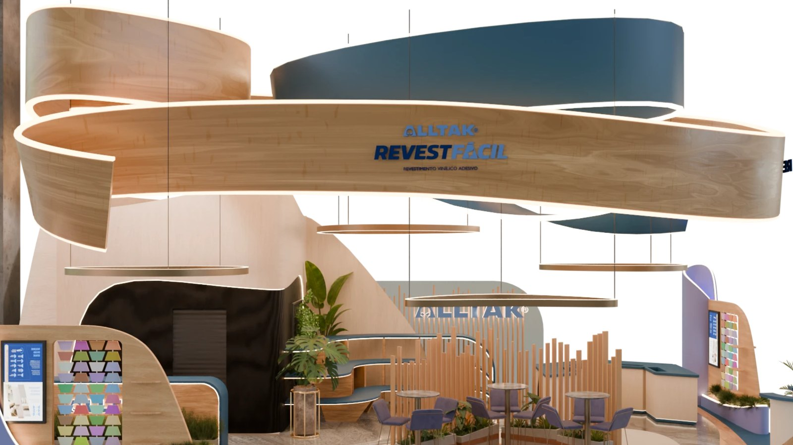
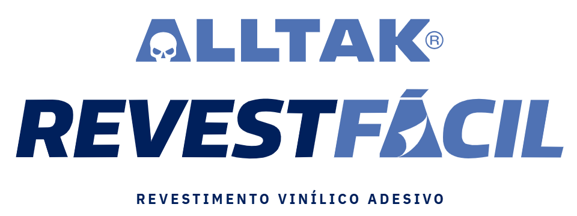
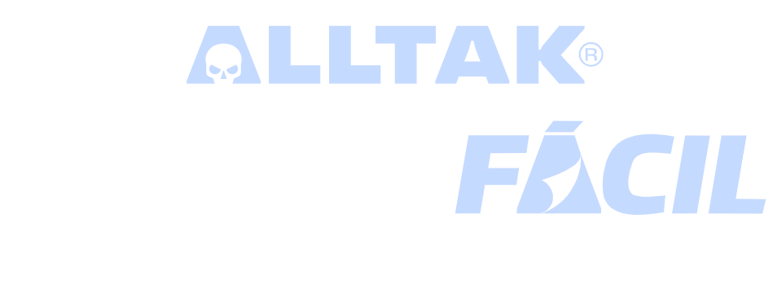
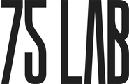
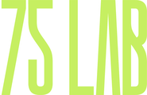

1
Testeira em camadas
Faixas de madeira e azul com LED nas bordas. A marca aparece de longe, de todos os acessos.




A feira · o tamanho da vitrine
Público
Mídia
Negócio

Fonte: relatório pós-show Haus Decor 2025 (NürnbergMesse Brasil), pp. 4, 9 e 18. A visitação é publicada somada à Expo Revestir. O balanço de 2026 ainda não foi divulgado.


A feira · o padrão estético
As marcas que mais chamam atenção na Haus Decor não montam loja, constroem ambientes. Usam curvas, materiais naturais, luz quente e uma narrativa própria.
O que os stands de referência têm em comum
Azul e madeira: a paleta de RevestFácil já fala a língua da feira.
Fotos: Haus Decor Show 2026 / NürnbergMesse Brasil (galeria oficial).


A feira · tendências do Book 2026
Cores do ano
Azul Puro (Coral) · Cáqui Universal (Sherwin-Williams) · Ocala, terroso de argila (Lukscolor) · Majari, brasilidade (Iquine)
Superfícies e materiais
Texturas minerais flexíveis, pedras naturais, alumínio e metal perfurado, telas tensionadas no lugar do forro
Luz
Madeira natural e cerâmica autoral, luminárias que contam histórias, luz de paisagismo e temperatura de cor ajustável
Conceitos
Acolhimento, bem-estar, conexão com a natureza, brasilidade e casa inteligente
Superfícies e texturas estão no centro da feira, e esse é o terreno natural de RevestFácil.
Fontes: Book de Tendências Haus Decor Show 2026, pp. 20–33 (NürnbergMesse Brasil). Fotos: galeria oficial Haus Decor Show 2026 / NürnbergMesse Brasil.